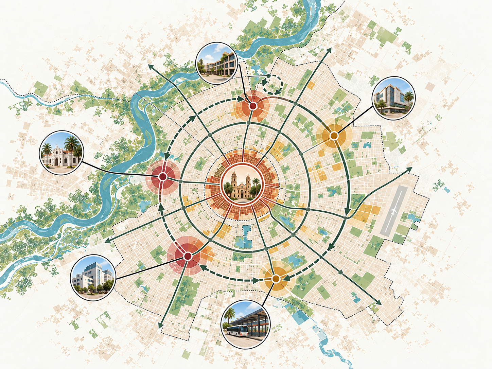
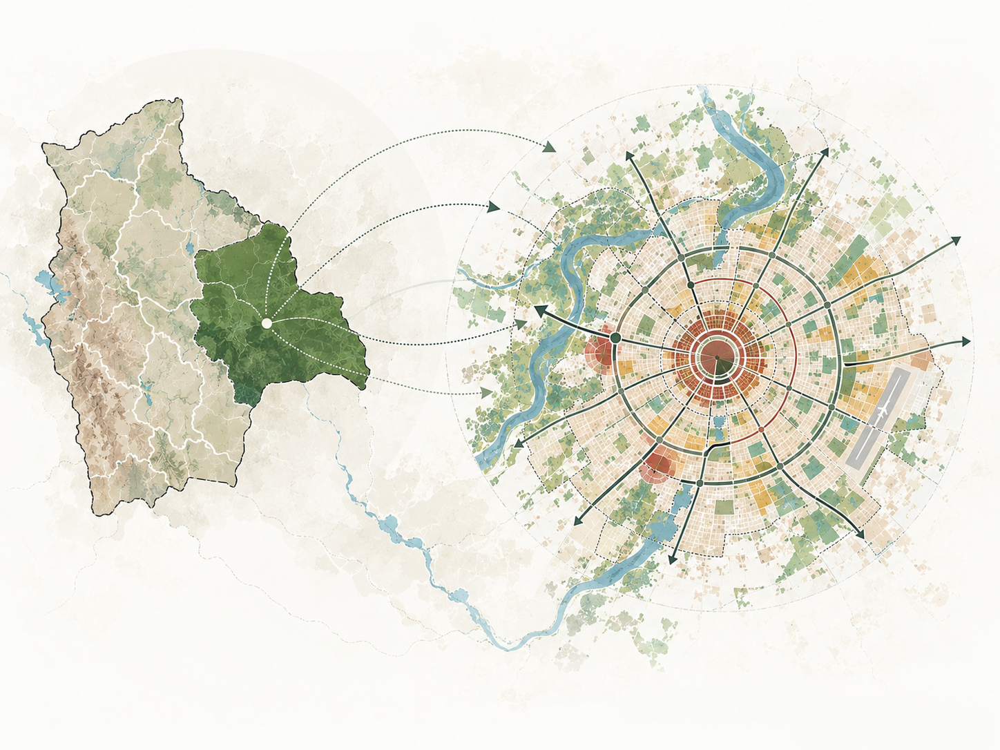
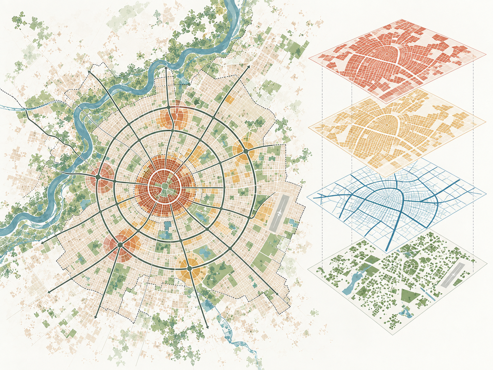

Inicio público para invitados y clientes
Plataforma Geoespacial
Inteligente
Un entorno digital pensado para presentar, explorar y comprender el territorio de forma clara, visual y estratégica. Esta portada pública muestra la propuesta geoespacial del proyecto sin exponer la parte interna del sistema, manteniendo una experiencia elegante, institucional y orientada a la toma de decisiones.
Web y móvil
Cartografía inteligente
Capas vectoriales integradas
Visualización territorial

Visual principal
Mapa editorial limpio inspirado en Santa Cruz de la Sierra, con centralidades, conectividad y estructura urbana.
Visión del producto
Una portada pública con lenguaje geoespacial
Se eliminó la lógica de panel interno, el antiguo login y el menú lateral de módulos para convertir la experiencia en una página de inicio institucional, más apropiada para invitados, clientes y usuarios no autenticados.
Qué comunica esta portada
La página está diseñada para presentar el valor del sistema: organización territorial, integración de datos, cartografía urbana, análisis espacial y acceso multiplataforma. La composición visual pone el foco en la información y no en controles internos de operación.
Sin panel interno
No se muestran módulos operativos como Principal, Mi perfil, Servicios o Filtros.
Paleta editorial
Se adoptan tonos beige, terracota, salvia y azul suave en coherencia con las nuevas imágenes.
Imagen protagonista
El visual principal aparece junto al título para reforzar el carácter geoespacial desde el primer vistazo.
Experiencia pública
Lenguaje claro, institucional y listo para mostrar el proyecto a terceros.

Lectura territorial ampliada
La portada también puede mostrar la relación entre la escala país y la escala ciudad, conectando la visión nacional con el enfoque urbano de Santa Cruz de la Sierra. Esto ayuda a presentar el proyecto con una narrativa más estratégica y comprensible.
Capas vectoriales integradas
Base geográfica organizada para visualización y análisis
La información territorial se puede presentar por niveles temáticos que permiten comprender la ciudad, sus unidades espaciales, sus redes y sus puntos de interés, manteniendo una experiencia visual coherente y fácil de interpretar.

Lectura por capas y estructura GIS
La visual narrativa del sistema se apoya en una lógica de capas: manzanas, lotes, vías y códigos fijos. Esto permite explicar de forma intuitiva cómo se construye el modelo espacial y cómo se habilitan consultas, análisis y futuras visualizaciones.
Manzanas
Unidades base del tejido urbano para lectura morfológica y análisis territorial.
Lotes
División predial y detalle parcelario para una visión más fina de la ciudad.
Vías
Red de conectividad, jerarquías viales, accesos urbanos y estructura de movilidad.
Códigos fijos
Puntos de interés, equipamientos y servicios que enriquecen la consulta geográfica.
Arquitectura de solución
Una estructura clara, escalable y lista para evolucionar
La portada pública también puede reforzar técnicamente el proyecto mostrando, de forma resumida, cómo se organiza la solución desde la experiencia del usuario hasta la persistencia de datos y servicios geográficos.
Presentación
Interfaz web responsive para escritorio, tablet y móvil, con una experiencia limpia y orientada a consulta territorial.
Servicios y aplicación
Lógica de negocio, consultas espaciales, filtros, endpoints y exposición controlada de información geográfica.
Dominio geoespacial
Modelo estructurado alrededor de capas vectoriales, atributos, relaciones espaciales y reglas funcionales.
Infraestructura y datos
Persistencia, carga de información, servicios cartográficos y administración de la base geográfica integrada.
Alcance visual
Una narrativa pensada para mostrar el valor del territorio
Con esta composición, la portada deja de parecer un dashboard interno y se convierte en una presentación pública del sistema, con imágenes limpias, foco institucional y una estética coherente con el universo cartográfico del proyecto.